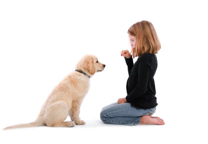
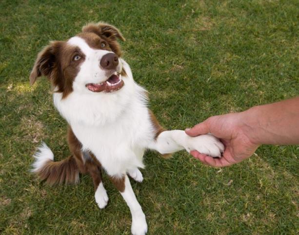

It's Training Dogs!
It's training dogs, hallelujah! Let's train our dogs, together.

It's training dogs, hallelujah! Let's train our dogs, together.
Start housebreaking your pup the right way with these tips and tricks.
See Tips
Get started with the first basic command to teach your new pup.
See Tips If you rescued your pup, there's a good chance he may be nervous with strangers. Learn how to keep him calm.
See Tips
Try another simple command - lay down!
See Tips
Need to train your dog with puppy pads? Try these tips.
See Tips
Shake is a fun and easy command you can teach in one session!
See Tips The best way to stop barking dogs is to teach them the "Enough" command
See Tips
It's training dogs, hallelujah! We all know that training dogs isn't easy. It takes hard work, consistency, and most of all, patience. But there's no better reward than a furry best friend, especially if they potty outside and obey basic commands!
It's Training Dogs is both an education resource and a forum setting for people going through dog training to read about training techniques, and connect with others who are training their pups. Let's train our dogs, together!
Email Me!